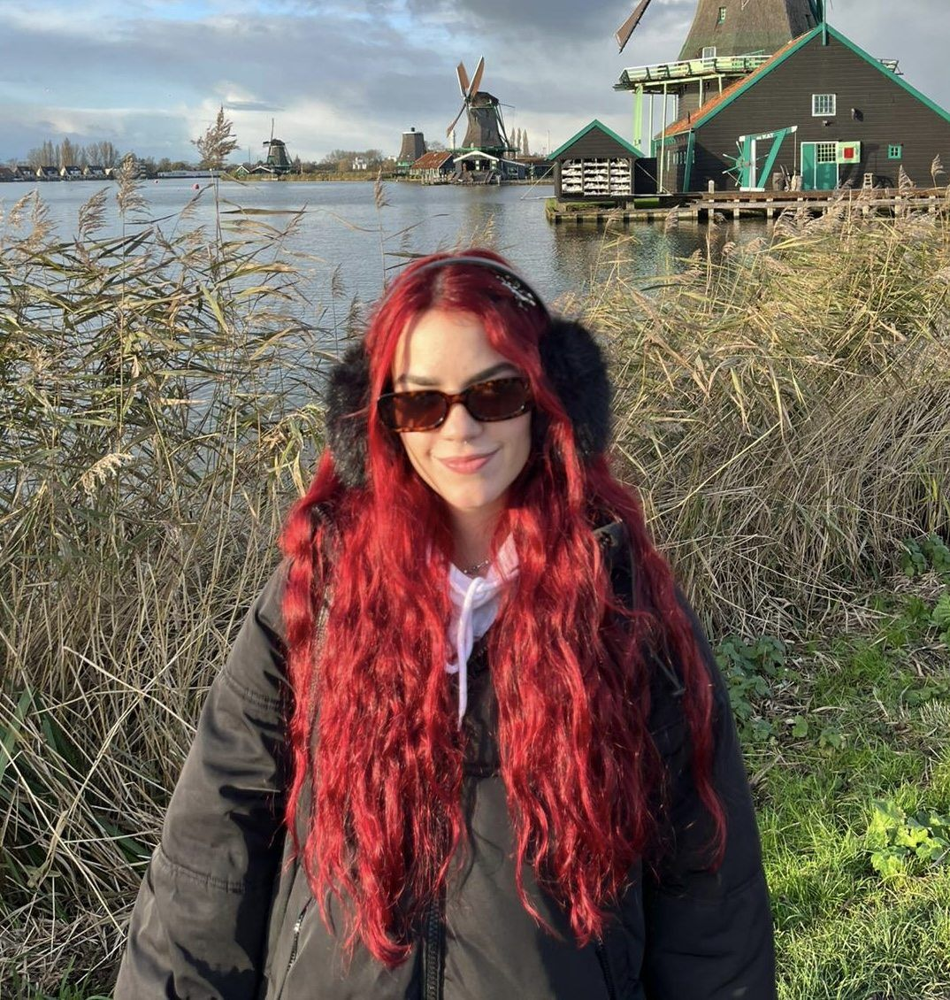

A LITTLE
MORE ABOUT ME.
HOVER TO EXPLORE · CLICK TO DISCOVER ↗

CLARA, OUT OF OFFICE ♡
MY CREATIVE SOUNDTRACK
3 SONGS
I DESIGN TO ↗
CLICK A COVER TO LISTEN ON SPOTIFY ↗

CLICK A COVER TO LISTEN ON SPOTIFY ↗